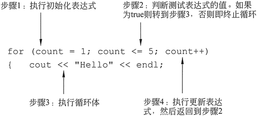
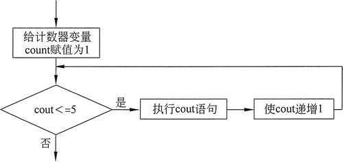
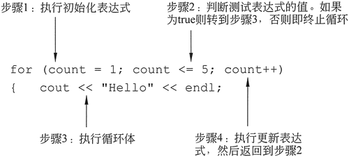
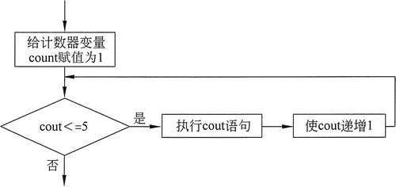

首页 > 编程笔记
C++ for循环详解
一般来说，有两类循环：条件循环和计数控制循环。
只要存在特定条件，就执行条件循环。例如，只要输入值无效，就会执行输入验证循环。在编写一个条件循环时，无法知道它将迭代的次数。
有时候程序员知道循环必须执行的确切迭代次数。重复特定次数的循环称为计数控制循环。例如，如果一个循环要求用户输入一年中每个月的销售金额，则它将迭代 12 次。这实际上意味着，循环数为 12，并要求用户在每次计数时输入销售金额。
计数控制循环必须具有 3 个要素：
前面已经介绍过，通过使用 while 循环来创建计数控制循环的方法，但是，由于计数控制循环实在太常用，所以 C++ 又提供了另外一种特别适合计数控制的循环，即所谓的 for 循环。
for 循环专门用于初始化、测试和更新计数器变量。以下是 for 循环的格式：
for 循环的第一行是循环头。在关键词 for 之后，括号内有 3 个表达式，用分号分隔（注意第 3 个表达式之后没有分号）：
以下是一个简单的 for 循环示例，将打印“Hello”字符串 5 次：

图 1 for 循环执行过程中事件发生的顺序
请注意，只要测试表达式为真，就重复步骤 2〜4。图 2 以流程图形式显示了 for 循环的一般逻辑。

图 2 for 循环的流程图
请注意如何使用计数器变量 count 来控制循环迭代的次数。它的值从 1 开始，每次循环迭代之后递增 1。只要表达式 "count <= 5" 保持为 true，循环将重复迭代。但是，在 5 次迭代之后，count 将变成 6，这导致测试表达式变为 false，所以循环终止。
还要注意的是，在这个例子中，count 变量仅在循环头中使用，以控制循环迭代的次数。它不用于任何其他目的。当然，也可以在循环体内使用计数器变量。例如，来看下面的代码：
下面的程序通过使用 for 循环而不是 while 循环来显示数字 1〜5 及其平方值。
例如，以下循环会在每次迭代之后递增x两次：
例如，以下程序段将不会编译，因为最后一个 cout 语句无法访问变量 count：
例如，来看以下代码中的循环，该代码在初始化表达式中有两个语句：
以下是一个 for 循环头的示例：
如果已经执行了或者不需要初始化，则可以从 for 循环括号内省略初始化表达式。以下示例即已经在循环之前对计数器执行了初始化：
只要存在特定条件，就执行条件循环。例如，只要输入值无效，就会执行输入验证循环。在编写一个条件循环时，无法知道它将迭代的次数。
有时候程序员知道循环必须执行的确切迭代次数。重复特定次数的循环称为计数控制循环。例如，如果一个循环要求用户输入一年中每个月的销售金额，则它将迭代 12 次。这实际上意味着，循环数为 12，并要求用户在每次计数时输入销售金额。
计数控制循环必须具有 3 个要素：
- 必须将计数器变量初始化为起始值。
- 必须通过将其与最终值进行比较来测试计数器变量。当计数器变量达到其最终值时，循环终止。
- 必须在每次迭代期间更新计数器变量。这通常通过变量递增来完成。
前面已经介绍过，通过使用 while 循环来创建计数控制循环的方法，但是，由于计数控制循环实在太常用，所以 C++ 又提供了另外一种特别适合计数控制的循环，即所谓的 for 循环。
for 循环专门用于初始化、测试和更新计数器变量。以下是 for 循环的格式：
for (初始化；测试；更新)
{
语句；
语句；
//根据需要在此放置更多语句
}
for 循环的第一行是循环头。在关键词 for 之后，括号内有 3 个表达式，用分号分隔（注意第 3 个表达式之后没有分号）：
- 第一个表达式是初始化表达式，它通常用于将计数器初始化为其起始值。这是循环执行的第一个动作，只做一次。
- 第二个表达式是测试表达式。它以与 while 和 do-while 循环中的测试表达式相同的方式测试条件，并控制循环的执行。只要这个条件为 true，for 循环的主体将重复。与 while 循环一样，for 循环也是一个预测试循环，因此它在每次迭代之前判断测试表达式。
- 第三个表达式是更新表达式。它在每次迭代结束时执行。通常，这是一个递增循环计数器变量的语句。
以下是一个简单的 for 循环示例，将打印“Hello”字符串 5 次：
for (count = 1; count <= 5; count++)
cout << "Hello" << endl;

图 1 for 循环执行过程中事件发生的顺序
请注意，只要测试表达式为真，就重复步骤 2〜4。图 2 以流程图形式显示了 for 循环的一般逻辑。

图 2 for 循环的流程图
请注意如何使用计数器变量 count 来控制循环迭代的次数。它的值从 1 开始，每次循环迭代之后递增 1。只要表达式 "count <= 5" 保持为 true，循环将重复迭代。但是，在 5 次迭代之后，count 将变成 6，这导致测试表达式变为 false，所以循环终止。
还要注意的是，在这个例子中，count 变量仅在循环头中使用，以控制循环迭代的次数。它不用于任何其他目的。当然，也可以在循环体内使用计数器变量。例如，来看下面的代码：
for (number = 1; number <= 5; number++)
cout << number << " ";
1 2 3 4 5
可以看到，循环在每次迭代期间显示 number 变量的内容。下面的程序通过使用 for 循环而不是 while 循环来显示数字 1〜5 及其平方值。
#include <iostream> #include <iomanip> using namespace std; int main() { int num; cout << "Number Square\n"; cout << "--------------\n"; for (num =1; num <= 5; num++) cout << setw (4) << num << setw (7) << (num * num) << endl; return 0; }程序输出结果：
Number Square -------------- 1 1 2 4 3 9 4 16 5 25
for 循环是一个预测试循环
因为 for 循环会在执行迭代之前判断其测试表达式的值，所以，如果代码编写不当，则它可能永远不会迭代。来看以下示例：
for (count = 11; count <= 10; count++)
cout << "Hello" << endl;
避免修改 for 循环体中的计数器变量
虽然可以如上面程序所示，在循环体内使用计数器变量，但是，请注意不要在其中放置修改它的语句。计数器变量的修改只应在更新表达式中进行，更新表达式将在每次迭代结束时自动执行。如果循环体中的某个语句也修改了计数器变量，那么循环可能不会如愿终止。例如，以下循环会在每次迭代之后递增x两次：
for (x = 1; x <= 10; x++)
{
cout << x << endl;
x++; / /错误
}
更新表达式的其他形式
在更新表达式中，循环控制变量的递增并不仅限于 1。例如，以下循环即通过使其计数器递增 2 来显示 2〜100 的所有偶数：
for(num = 2; num <= 100; num + = 2)
cout << num << endl;
而以下循环则可以显示从 10 递减到 0 的数字：
for(num = 10; num >= 0; num--)
cout << num << endl;
定义 for 循环初始化表达式中的变量
for 循环的计数器变量不仅可以在初始化表达式中初始化，也可以进行定义。以下代码即为一例：
for (int num = 1; num <= 5; num++)
cout << setw (4) << num << setw (7) << (num * num) << endl;
在这个循环中，num 变量在初始化表达式中被定义和初始化。如果计数器变量仅在循环中使用，则在循环头中定义好它是很好的编程习惯，这使变量的目的更加清晰。但是，当一个变量定义在 for 循环的初始化表达式中时，变量的作用域被限制在循环中，这意味着无法访问循环外的语句中的变量。例如，以下程序段将不会编译，因为最后一个 cout 语句无法访问变量 count：
for (int count = 1; count <= 10; count++)
cout << count << endl;
cout << "count is now " << count << endl; // 错误
在初始化和更新表达式中使用多个语句
可以在初始化表达式和更新表达式中执行多个语句。当在这些表达式中使用多个语句时，只需用逗号分隔语句。例如，来看以下代码中的循环，该代码在初始化表达式中有两个语句：
for (int x = 1, y = 1; x <= 5; x++)
{
cout << x << " plus " << y << " equals " << (x + y) << endl;
}
该循环的初始化表达式是：
int x = 1, y = 1
它定义并初始化了两个 int 变量：x和y。该循环产生的输出是：
1 plus 1 equals 2
2 plus 1 equals 3
3 plus 1 equals 4
4 plus 1 equals 5
5 plus 1 equals 6
for (int x = 1, y = 1; x <= 5; x++, y++)
{
cout << x << " plus " << y << " equals " << (x + y) << endl;
}
该循环的更新表达式可以同时递增 x 和 y 变量。该循环产生的输出如下：
1 plus 1 equals 2
2 plus 2 equals 4
3 plus 3 equals 6
4 plus 4 equals 8
5 plus 5 equals 10
以下是一个 for 循环头的示例：
for (int count = 1; count <= 10 && moreData, count++)
只有 "count <= 10" 且布尔变量 moreData 为 true 时，此循环才会执行。一旦这些条件中的任何一个变为 false，则循环将被退出。省略 for 循环的表达式或循环体
for 循环的一个或多个表达式，甚至连其循环体都可以省略，当然，这样做往往会被认为是很糟糕的编程风格。如果已经执行了或者不需要初始化，则可以从 for 循环括号内省略初始化表达式。以下示例即已经在循环之前对计数器执行了初始化：
int num = 1;
for ( ; num <= maxValue; num++)
cout << num << " " << (num * num) << endl;
如果更新表达式在循环中的其他位置执行，或者不需要，则可以省略更新表达式。虽然不推荐使用这种类型的代码，但是以下 for 循环可以像一个 while 循环一样工作：
int num = 1;
for ( ; num <= maxValue;)
{
cout << num << " " << (num * num) << endl;
num++;
}
尽管不建议，但也可以编写一个没有正式主体的 for 循环。在这种情况下，循环的所有工作都由循环头中的语句完成。以下示例可以显示 1〜10 的数字，每次迭代都将执行更新表达式中组合的递增操作和 cout 语句：for (number = 1; number <= 10; cout << number++);
关注公众号「站长严长生」，在手机上阅读所有教程，随时随地都能学习。内含一款搜索神器，免费下载全网书籍和视频。

微信扫码关注公众号